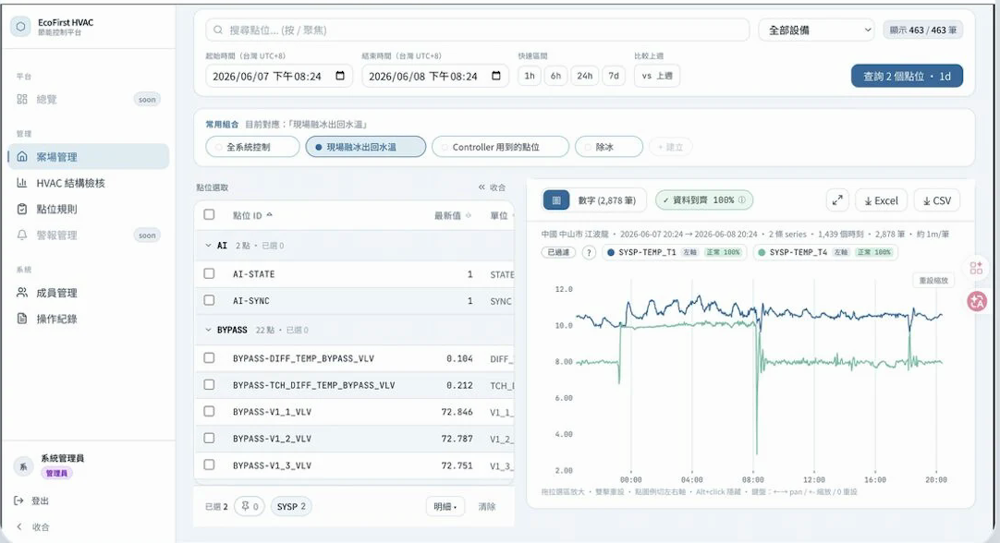

規格寫完了。
會議開完了。
東西，
還沒跑起來。
載入中 12%
AI 時代的 PM，
做出東西不再是門檻，
要看的是這六項。
每一段經歷，都讓這張圖再大一圈。
好奇
勇於嘗試
追求效率
看到新工具，
我先
動手試
。
Claude Code
Cursor
Gemini
Notion AI
AI 名片管理助手 · 0 到 1
用 Cursor 與 Gemini，自己做出來。
從 OCR 辨識失敗、重建版控，到部署上線。
拍名片
Gemini 辨識
Notion 建檔
案場資料查詢工具
0
次提交 · 2 個月
程式經驗不多的產品經理，
用 Claude Code 做出內部平台。
ecofirst-hvac.app

控制策略模擬工具
策略調整需要
1 週
+50%
把 AI 放進開發流程後的交付效率
找出
卡點
，
做出
解法
，
量出
成果
。
許承澤
Kevin Hsu
Product Manager · AI · B2C 平台 · 跨團隊交付
找出卡點，做出解法，量出成果。
Kevin Hsu
01 / 06
02 / 06
03 / 06
04 / 06
05 / 06
06 / 06